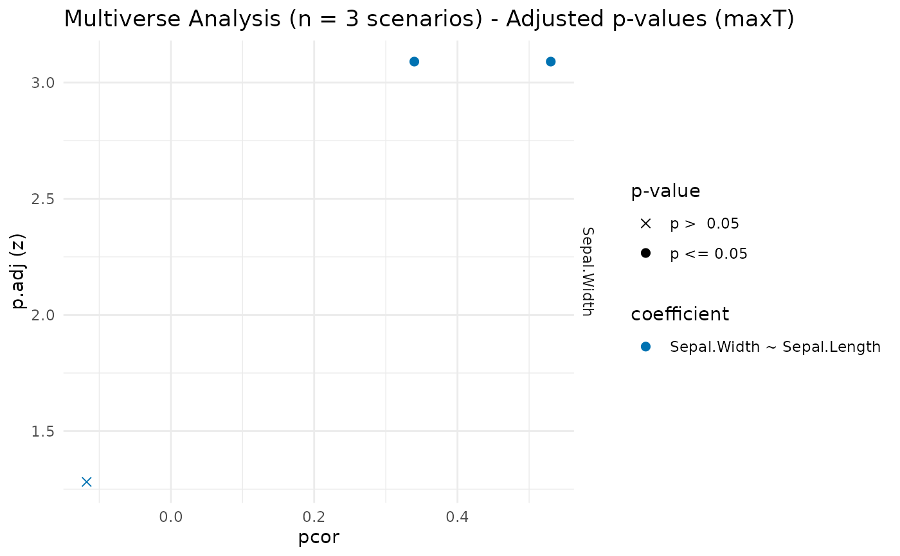

Methods for pima objects.
The following are methods to extract and manipulate relevant information from
a pima object.
Scatter plot of the specifications: calls spec_scatter() on the pima
object.
Usage
# S3 method for class 'pima'
print(x, n = 4, ...)
# S3 method for class 'pima'
summary(object, digits = NULL, ...)
# S3 method for class 'pima'
plot(
x,
by = "coefficient",
focal = NULL,
xvar = "pcor",
yvar = NULL,
p.adjusted = NULL,
p.transf = "z",
alpha = 0.05,
xlab = NULL,
ylab = NULL,
regex = FALSE,
shapes = NULL,
facet.scales = "free_x",
facet = NULL,
which.response = NULL,
...
)
# S3 method for class 'pima.multi'
print(x, ...)Arguments
- x
an object of class
pima.- n
number of rows to print from the beginning and end of the scenario table.
- ...
further arguments passed to
spec_scatter()(e.g.focal.var,p,title).- object
an object of class
pima.multi.- digits
number of digits when rounding. Default to
NULLthus no rounding.- by, focal, xvar, yvar, p.adjusted, p.transf, alpha, xlab, ylab, shapes, facet, facet.scales, which.response
see
spec_scatter().- regex
logical. If
TRUE,focalis a regular expression matched against the coefficient names. Default isFALSE.
See also
Other PIMA inference:
pima(),
pima_flipscores(),
pima_tree()
Examples
mods <- list(
a = lm(Sepal.Width ~ Sepal.Length, data = iris),
b = lm(Sepal.Width ~ Sepal.Length + Species, data = iris),
c = lm(Sepal.Width ~ Sepal.Length + Petal.Width, data = iris)
)
res <- pima(mods, tested_coeffs = "Sepal.Length", seed = 1,
engine = pima_flipscores(n_flips = 500))
res
#>
#> == Multiverse analysis with 3 scenarios ==
#>
#> model formula family link Intercept
#> 1 a Sepal.Width ~ Sepal.Length gaussian identity (Intercept)
#> 2 b Sepal.Width ~ Sepal.Length + Species gaussian identity (Intercept)
#> 3 c Sepal.Width ~ Sepal.Length + Petal.Width gaussian identity (Intercept)
#> Sepal.Length Species Petal.Width
#> 1 Sepal.Length excluded excluded
#> 2 Sepal.Length Species excluded
#> 3 Sepal.Length excluded Petal.Width
#>
summary(res)
#> model coefficient response estimate score se z
#> 1 a Sepal.Length Sepal.Width -0.0618848 -6.322667 4.405665 -1.435122
#> 2 b Sepal.Length Sepal.Width 0.3498801 13.630000 2.120158 6.428767
#> 3 c Sepal.Length Sepal.Width 0.2892867 9.782199 2.366554 4.133520
#> pcor p p.adj family link wald.p
#> 1 -0.1175698 0.132 0.200 gaussian identity 1.518983e-01
#> 2 0.5302358 0.002 0.002 gaussian identity 4.187340e-12
#> 3 0.3397733 0.002 0.002 gaussian identity 2.241644e-05
plot(res)
